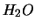

Siguiente: Presupuesto
Subir: Objetivos
Anterior: Objetivo General
Índice General
- Aprender a utilizar los métodos MP2 y ONIOM para el estudio de
una reacción de formación de glicina sobre hielos interestelares.
- Obtener un modelo sencillo de un hielo de  formado sobre
un análogo grafítico.
- Analizar energéticamente el mecanismo de formación de glicina en
un modelo sencillo de hielo interestelar
Mauricio Esguerra
2007-03-27